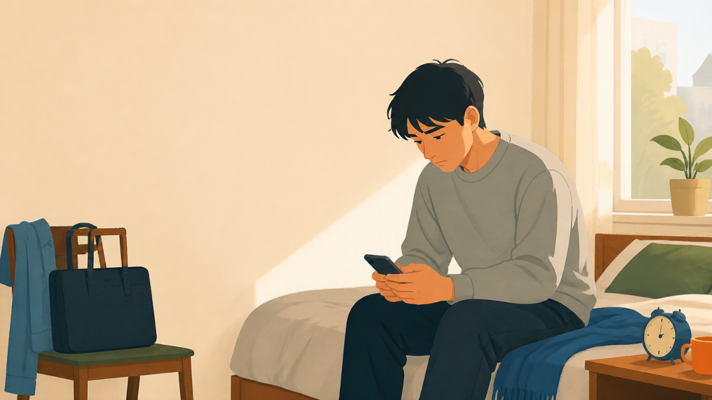
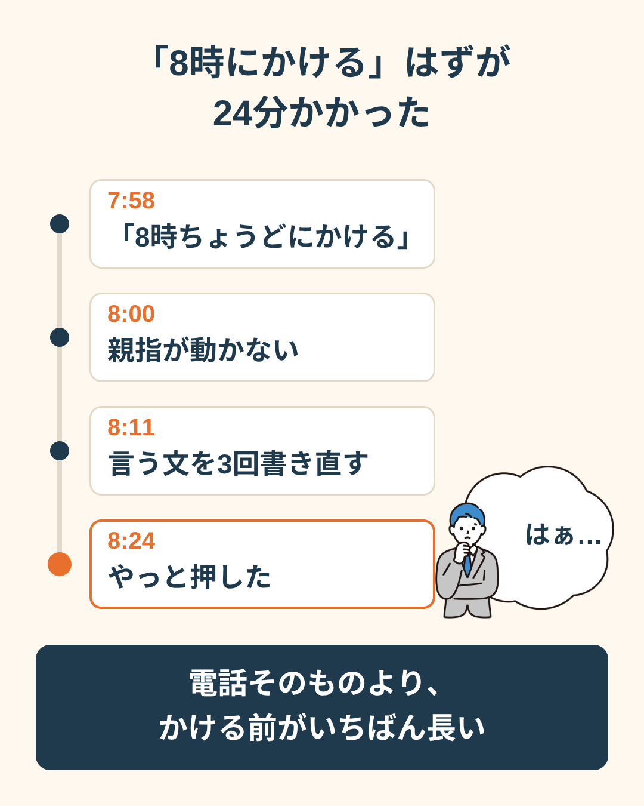
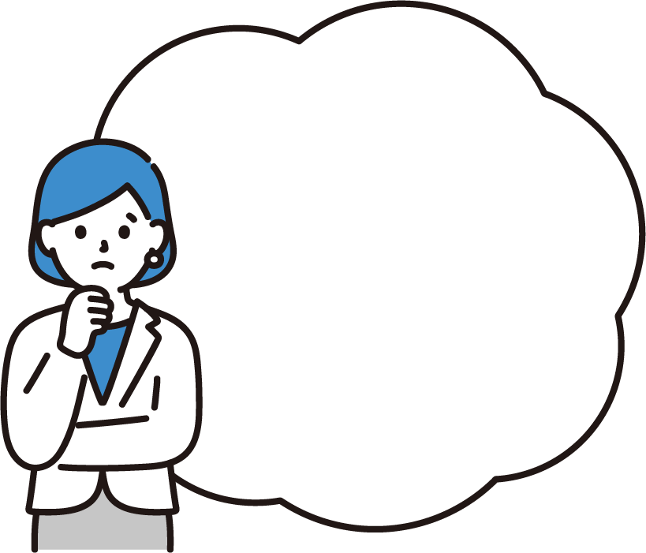
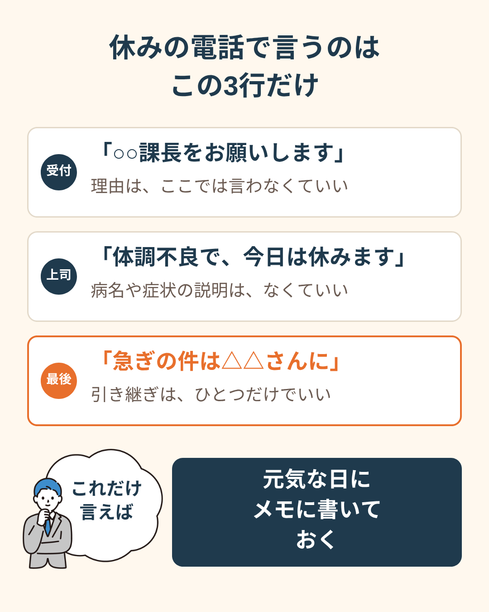
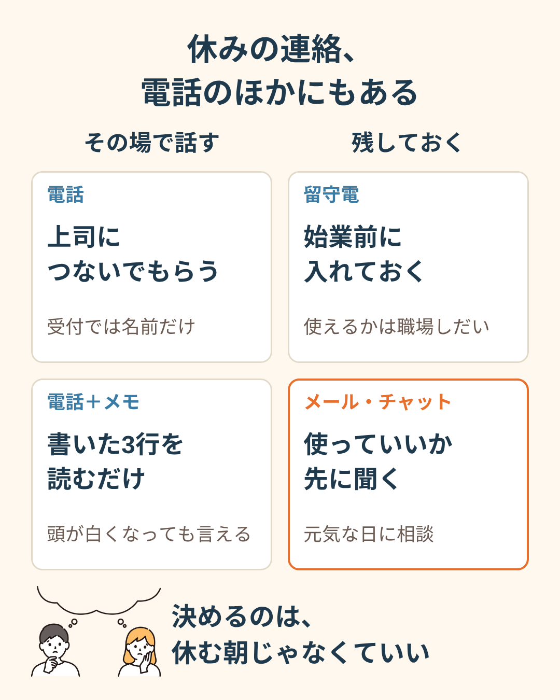
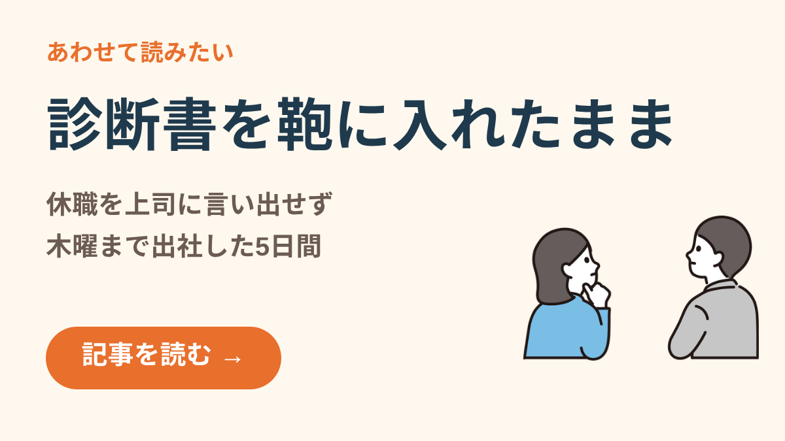
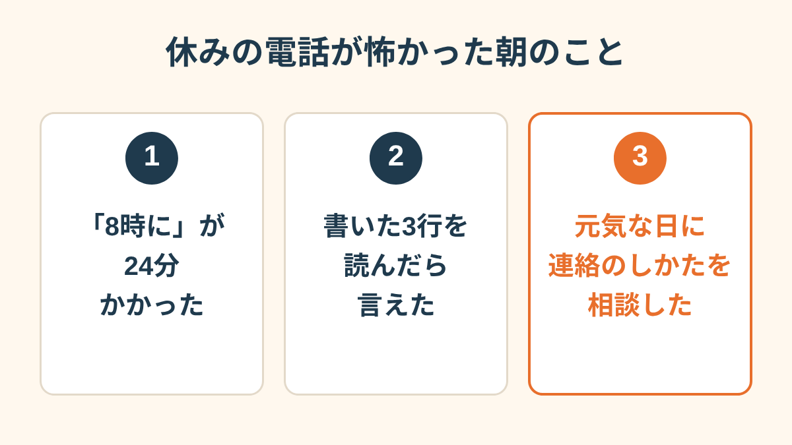

7時58分。ベッドの端に座って、スマホを両手で持っていた。
画面には、会社の事務所の番号。8時になったらかける。そう決めていた。
8時になった。親指が、動かなかった。
7時58分、スマホを持ったまま
33歳。物流会社の倉庫で、出荷伝票とドライバーさんの配車の事務をしている。始業は8時半。休むときは、8時から8時半のあいだに事務所へ電話する決まりになっている。
9月の終わりごろから、朝、起きられない日が出てきた。目は覚めている。6時40分のアラームも止めている。なのに、体が布団から出ていかない。
11月の最初の月曜は、それが3回目だった。

8時ちょうどにかければ、電話に出るのは事務のパートの佐々木さんだ。
「おはようございます、どうされました？」と聞かれる。「体調が悪くて」と言う。「あら、大丈夫？」と言われる。「木村係長につなぎますね」と保留の音楽が流れる。係長が出る。
そこまで全部、頭の中で3回くらい再生した。再生するたびに、親指が重くなった。
8時5分。今かけたら、佐々木さんにまた説明しないといけない。8時7分。係長が出社する前にかけたほうがいいのか、出社してからのほうがいいのか、分からなくなった。
8時11分、スマホのメモ帳に、言うことを書いた。消して、書き直した。3回目でやっと「体調不良で、今日はお休みします。急ぎの出荷は田中さんに頼んであります」の2行になった。
8時24分。通話ボタンを押した。
電話そのものは、1分40秒で終わった。

「私、仕事はコールセンターなんです。1日80本とか電話とってるんですよ。なのに、自分の休みの電話だけは、どうしてもかけられない。笑っちゃいますよね。結局、母に代わりにかけてもらったこともあります。29歳で。あれは、さすがに情けなかったです」
「声、元気そうじゃん」
電話が怖くなったのには、たぶん、きっかけがある。
10月に1回目に休んだとき、係長は「了解、お大事に」と言ってくれた。2回目、同じ月の木曜。電話口で、係長が少し笑って言った。
「声、元気そうじゃん」
責める感じではなかった。冗談の言い方だった。分かっている。でも、そのあと何と返したか覚えていない。電話を切ってから、布団の中で「元気そうに聞こえたなら、ずる休みだと思われたんだ」と、昼まで同じことを考えていた。
休んだ次の日、事務所のドアを開けるとき、毎回少し息を止める。
佐々木さんは「大丈夫でした？」と聞いてくれる。ドライバーさんは「昨日いなかったね」と言う。みんな普通だ。普通なのに、「昨日、本当は動けたんじゃないの」と言われている気がしてしまう。誰もそんなこと言っていないのに。
それで、次の朝の電話が、また少し重くなる。
「介護の仕事でシフト制なので、私が休むと誰かが代わりに出るんです。一度、電話の向こうで主任が小さくため息ついて、『で、誰に頼めばいい？』って。責められてはないんですけど。それから、休む日は前の晩から眠れなくなりました。電話するくらいなら行ったほうがまし、って無理して行って、余計にこじらせた時期があります」
LINEにしたら、叱られた
翌週の水曜、4回目。もう電話は無理だと思って、7時50分に係長へLINEを送った。
「体調不良のため、本日お休みをいただきます。申し訳ありません」
既読がついたのは9時過ぎ。返事は9時10分に来た。
「欠勤は電話で、って決まってるよね。次からはお願い」
正しいのは係長のほうだ。事務所の決まりにも書いてある。LINEだと、朝礼までに係長が見ていないこともある。分かっている。分かっているから、スマホを伏せて天井を見ていた。
その日の夜、心療内科をネットで予約した。予約がネットでできるところを、わざわざ探した。電話じゃなくていい、というだけで選んだ。それくらい、電話が怖くなっていた。

元気な水曜に、聞いてみた
病院の先生に「朝の電話がいちばんきつい」と話したら、「それ、職場の人に一度話してみてもいいかもしれませんね」と言われた。体調の悪い朝じゃなくて、動ける日に。
その次の水曜は、わりと調子がよかった。昼休み、倉庫の裏の自販機の前で、係長に声をかけた。
「休みの連絡なんですけど、朝、どうしても電話がきつくて。留守電かメールでもいいですか」
係長は缶コーヒーを持ったまま、しばらく黙っていた。それから「電話がきついって、どういう感じ？」と聞いてきた。
うまく説明できなかった。「かけようとすると、30分くらい動けなくなるんです」とだけ言った。
「……そっか。じゃあ、始業前に事務所の留守電に入れといて。そのかわり、昼までに一回LINEちょうだい。生きてるかだけ分かればいいから」
「声、元気そうじゃん」のことは、言わなかった。係長も、たぶん覚えていない。

スマホのメモ帳には、あのとき3回書き直した2行に、1行足して残してある。受付で言う一言、係長に言う一言、引き継ぎをひとつ。それ以上は言わなくていい、と自分で決めた。

先週の木曜、また朝、動けなかった。
7時48分にスマホを持って、7時52分に事務所の留守電に3行を読んだ。4分。ゼロにはならなかった。でも、24分よりはずっと短かった。
11時半に係長へLINEを送ったら「了解。寝とけ」とだけ返ってきた。
この朝の連絡のことを、先生と「休む」話としてちゃんと話すようになったのは、それからひと月くらいあとだ。休むと決めたあとにも、言い出せない時間はあった。
休職の診断書をもらったのに、上司に言い出せないまま鞄に入れて出社し続けた人の話もある。「言う」までの時間の長さは、たぶん、似ている。

休職の診断書を、上司に出せなかった5日間 →
この記事に、聞いてみたいことはありますか？
「自分の場合はどうなんだろう」と思ったことを、気軽に書いてみてください。いただいた質問は個別にお返事したうえで、匿名で記事にすることがあります。